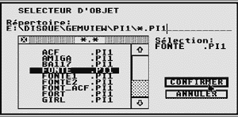
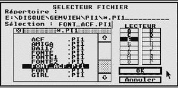

Capture d'images
( Les captures d'�cran ont �t� faites avec PACIFIST
version 0.46 )
|

Selecteur de fichier du TOS 1.40 |
|
|

Selecteur de fichier du TOS 1.62 |
Choisir l'application au démarrage
d'une disquette.
Exemple de bureau.